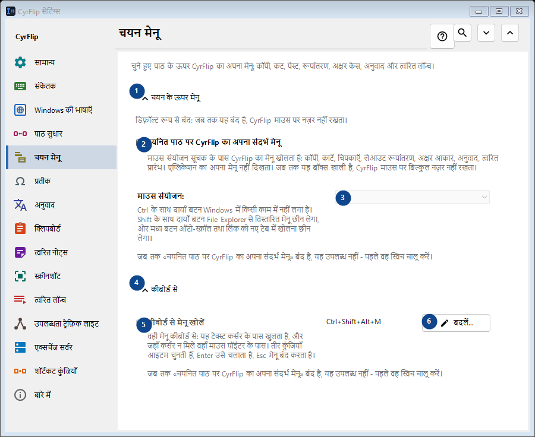
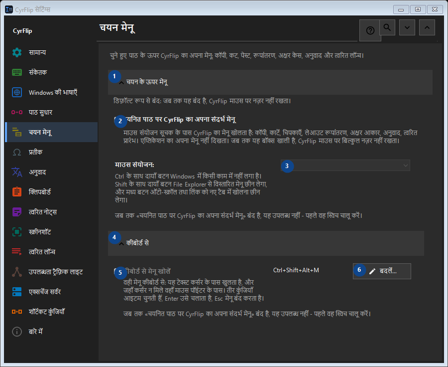

चयन मेनू
इसका उपयोग
चुने हुए पाठ के ऊपर CyrFlip का अपना मेनू: कॉपी, कट, पेस्ट, रूपांतरण, अक्षर केस, अनुवाद और त्वरित लॉन्च।


उपयोग का क्रम
सेटिंग तुरंत लागू होती हैं। कोई अनिवार्य क्रम नहीं है; नीचे दिए समूहों का उपयोग करें।
तत्व
1. चयन के ऊपर मेनू
बताई गई कार्रवाई के लिए इस आदेश का उपयोग करें। स्वीकार करने से पहले पुष्टि पढ़ें।
आपके शॉर्टकट2. चयनित पाठ पर CyrFlip का अपना संदर्भ मेनू
माउस संयोजन सूचक के पास CyrFlip का मेनू खोलता है: कॉपी, काटें, चिपकाएँ, लेआउट रूपांतरण, अक्षर आकार, अनुवाद, त्वरित प्रारंभ। एप्लिकेशन का अपना मेनू नहीं दिखता। जब तक यह बॉक्स खाली है, CyrFlip माउस पर बिल्कुल नज़र नहीं रखता।
आपके शॉर्टकट3. माउस संयोजन
जब तक «चयनित पाठ पर CyrFlip का अपना संदर्भ मेनू» बंद है, यह उपलब्ध नहीं - पहले वह स्विच चालू करें। यह तत्व अभी उपलब्ध नहीं है। पहले सुविधा चालू करें या कोई प्रविष्टि चुनें।
आपके शॉर्टकट4. कीबोर्ड से
बताई गई कार्रवाई के लिए इस आदेश का उपयोग करें। स्वीकार करने से पहले पुष्टि पढ़ें।
आपके शॉर्टकट5. कीबोर्ड से मेनू खोलें
जब तक «चयनित पाठ पर CyrFlip का अपना संदर्भ मेनू» बंद है, यह उपलब्ध नहीं - पहले वह स्विच चालू करें। यह तत्व अभी उपलब्ध नहीं है। पहले सुविधा चालू करें या कोई प्रविष्टि चुनें।
आपके शॉर्टकट6. बदलें - कीबोर्ड से मेनू खोलें
बताई गई कार्रवाई के लिए इस आदेश का उपयोग करें। स्वीकार करने से पहले पुष्टि पढ़ें।
आपके शॉर्टकट